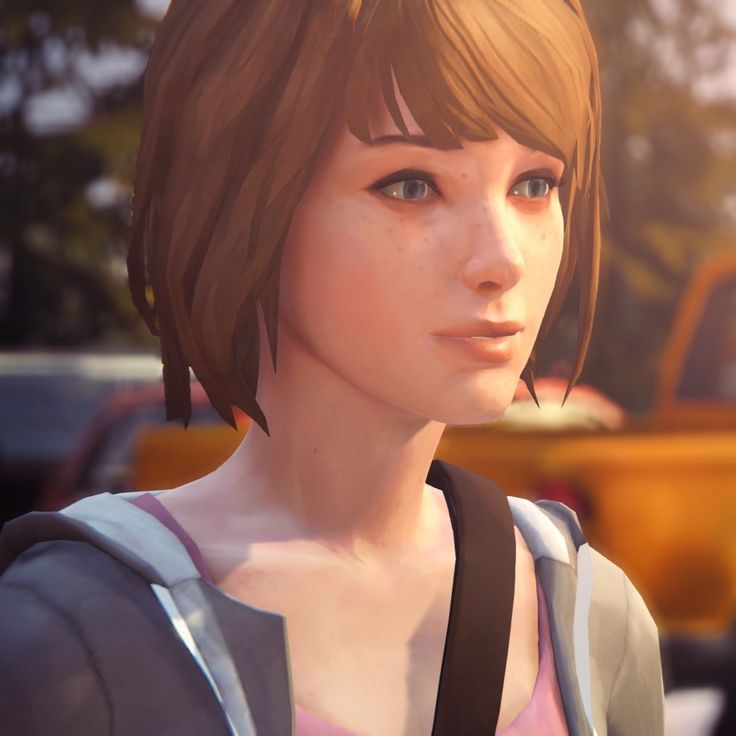
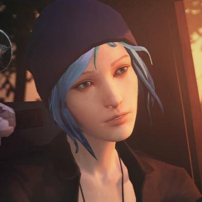
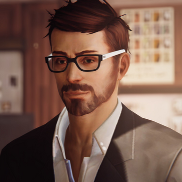
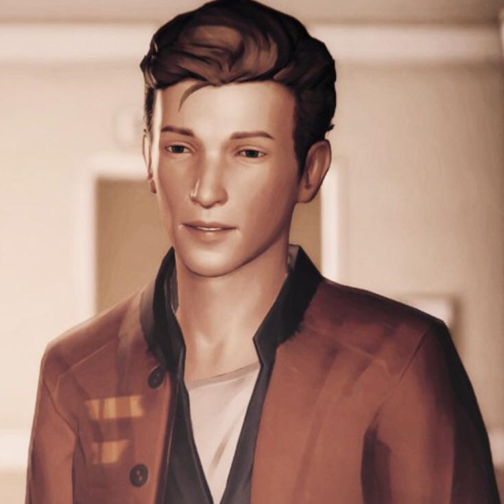

Max Caulfield

Maxine Caulfield, better known as Max (born September 21, 1995), is the main protagonist of Life is Strange. She is an 18-year-old aspiring photographer and senior at Blackwell Academy. She left her mom and dad in Seattle for the seaside town of Arcadia Bay, Oregon, where she grew up. After saving her childhood friend Chloe Price from being killed by Nathan Prescott in one of Blackwell Academy's bathrooms, she discovers she has the ability to rewind time and even stop it in its tracks. On the search for clues to solve the mysterious disappearance of Rachel Amber, Max must also discover how to use her powers to help Chloe find her missing friend.
Chloe Price

Chloe Elizabeth Price (born March 11, 1994)[2] is the deuteragonist of Life is Strange. She was the best friend of Max Caulfield before she moved to Seattle, leaving Chloe in their hometown of Arcadia Bay, Oregon. They rekindle their friendship during the events of the game. After Max left, Chloe became best friends with Rachel Amber before Rachel went missing. She is the daughter of William Price and Joyce Price, and the step-daughter of David Madsen. Chloe`s death may be the catalyst to unlocking Max's powers and their emotional journey together is the main thrust of the story right through to its conclusion.
Mark Jefferson

Mark Jefferson (born April 11, 1975) is a photography teacher at Blackwell Academy and the main antagonist of Life is Strange. As a famous photographer and renowned for his good looks and charm, Jefferson used this in order to secure himself a high ranking job at Blackwell. Once he had this position, he methodically and sadistically used it to prey on, kidnap, sexually assault and sometimes murder teenage girls. Afterwards, he would take photos of either their unconscious or deceased state, before dumping them back where he kidnapped them.
Nathan Prescott
